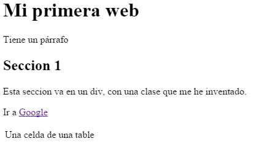
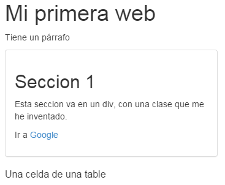
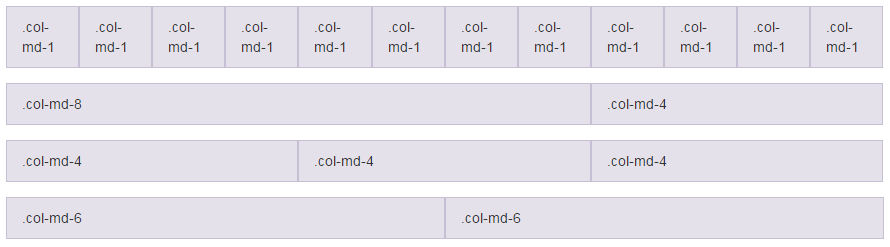

HTML+CSS
Alejandro Urbano Álvarez • Nicolas Lozano ArguellesCurso JavasScript Básico - 2014
HTML + CSS
- Introducción
- Conceptos básicos HTML
- CSS: Intro y selectores
- Bootstrap
Introducción
- Describe la estructura de una página
<!DOCTYPE html>
<head>
<title>Mi primera pagina</title>
</head>
<body>
Contenido
</body>
</html>
Introducción: Partes
head: Cabecera, describe la página, e incluye elementos extra (como CSS).body: Cuerpo, la página en si.
Elementos más comunes
h1, h2...: Encabezadosp: Párrafodiv: Contenedor, bloque básico al construir una webimg: Imágena: Enlacetable: Tabla
Elementos más comunes
<h1>Mi primera web</h1>
<p>Tiene un párrafo</p>
<div class="caja">
<h2>Seccion 1</h2>
<p>Esta seccion va en un div, con una clase que me he inventado.</p>
<p>Ir a <a href="http://google.com">Google</a></p>
</div>
<table>
<tr>
<td>Una celda de una table</td>
</tr>
</table>
Elementos más comunes
CSS
- HTML describe estructura
- CSS describe cómo debe verse la página
- Veamos el ejemplo anterior con algo de CSS:
CSS: Ejemplo
Antes y después
Añadir CSS a tu página
- Puede ir en un archivo propio (.css)
- Incluido en el
headde la página - En el propio elemento
style=""
Añadir CSS a tu página
<head>
<!-- Modo 1: Archivo externo -->
<link type="text/css" rel="stylesheet" href="estilos.css"/>
<!-- Modo 2: Incluido en el head -->
<style type="text/css">
p{
color: red;
}
</style>
</head>
<body>
<!-- Modo 3: En el mismo elemento -->
<p style="color: blue">Esto se verá de color azul</p>
</body>
CSS: Selectores básicos
- Elemento: Simplemente usando el nombre del elemento HTML
- Clase: Seleccionan elementos con el atributo class=""
- Id: Selecciona elementos con id="", debe ser única.
Tipos de selector
elemento{ }
.clase{ }
#id{ }
Selectores avanzados
- Varios elementos a la vez:
div, .clase1, p{ color: red; } - Elementos dentro de elementos
div p{ color: red; } - Hijos directos
h1 > span{ color: #ccc; } - Pseudo-clase
a:hover{ text-decoration: underline; }
Bootstrap
Y los frameworks de CSS
¿Por qué interesa?
- Está hecho por gente que sabe de CSS.
- Ahorra tiempo, y por lo general queda mejor.
¿Por qué no lo usa todo el mundo?
- Todas las páginas quedan igual...
- ...si no se dedica algo de tiempo.
Elementos
- Rejilla (grid)
- Componentes
- Clases
Rejilla

Columna izquierda
Columna derecha
Componentes y clases

Documentación: getbootstrap.com